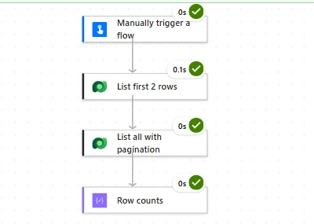
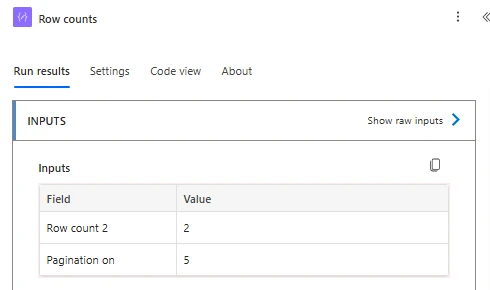
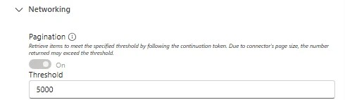

- Power Automate
- Level 4 · Reliable flows · 5 of 7
Pagination and thresholds
Actions that return lists (Dataverse List rows, SharePoint Get items, Excel List rows present in a table) return one page of results by default. If your data is bigger than a page, the flow silently works on part of it. Pagination tells the action to keep fetching pages until it reaches a threshold.
Row count vs pagination


| Setting | Means |
|---|---|
| Row count / Top Count | "Give me at most this many." Use it when you only want the first few. |
| Pagination + Threshold | "Keep fetching pages until you have this many." Use it to read everything. |
Turning pagination on

For Dataverse, a page is up to 5,000 rows and the threshold can go up to 100,000. Other connectors have smaller pages (Excel's default page is much smaller), and the threshold is rounded to whole pages, so you can get slightly more rows than you asked for.
Before you turn it on
- Filter first. An OData filter that returns 200 rows beats pagination that returns 50,000.
- Select columns. Fewer columns per row means faster responses and smaller run history.
- Beyond the threshold, process in batches: page with a skip token or a date window in a Do until loop, or move the work to a dataflow.
New to this? Start from the basics optional
Page: one chunk of results returned by one request to the service.
Threshold: the total number of rows the action collects across pages.
Silent truncation: getting the first page only, with no error. The run succeeds but misses data.
Build it step by step optional
- Add List rows (Dataverse) on a table with a filter, and set Row count to 2.
- Add a second List rows with the same table and filter and no Row count.
- Open the second one's Settings, turn on Pagination and set Threshold to 5000.
- Add a Compose that shows
length(outputs('List_rows')?['body/value'])for each. - Test and compare the counts.
Common mistakes
- Testing with 20 rows and going live with 20,000. Always check the connector's default page size.
- Combining Row count and pagination and expecting both. Decide whether you want "the first N" or "all".
- Pulling everything into a loop. Large lists inside Apply to each multiply actions quickly; filter at the source.